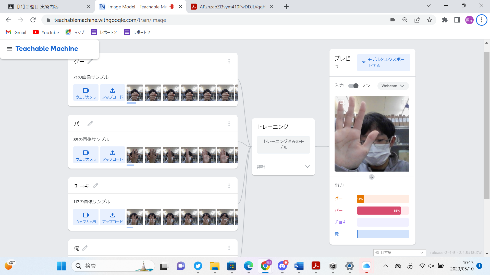
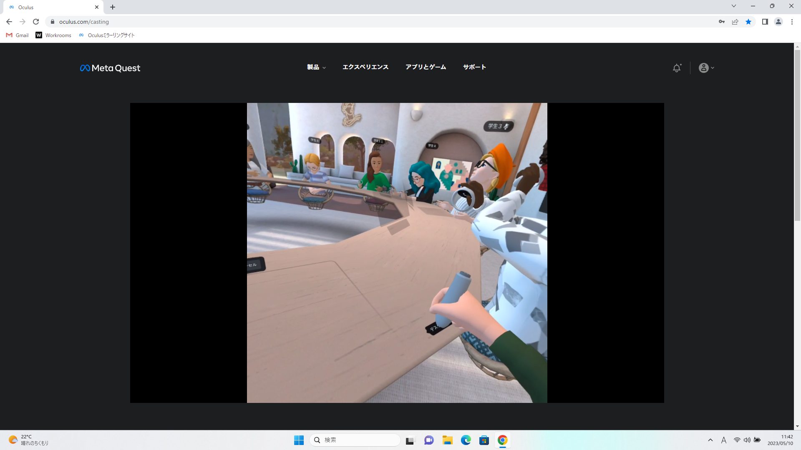

第2週目
2-1 １週目のレポートをHTMLで作る
１週目のレポート
1.内容
一週目のレポートを作成する。
2.感想
前回の授業でも話されていたが、今回の授業でもレポートの作り方を説明してくださったので、前回わからなかった部分が
今回でしっかり理解することができてよかった。次回からスムーズにレポートを作っていけるので、今回の授業はありがたかった。
2-2 機械学習体験

1.内容
ブロックプログラミングによる機械学習
2.感想
画像をAIで読み込み、学習させて画像を識別させてさせていくという、本格的にAIを使っていく授業は初めてで楽しかった。
AIにあまりにも多くの画像を読み込ませようとしたらフリーズしてしまい、時間がなかったので画像の数を少なくしてしまったので、
選別の精度はとても悪かった。
2-3 VR（バーチャルリアリティー：Virtual Reality）会議室の体験

1.内容
VR体験
2.感想
過去に一度VRを体験したことがあるが、その時より画像がよく(特にホーム画面)、またVRを使った体験もコントローラーを使うなど
本格的に体験できてよかった。画面酔いして少し気持ち悪かった。この技術を使って何に役立たせていけるのか、考えたり調べたり
してみようと思った。